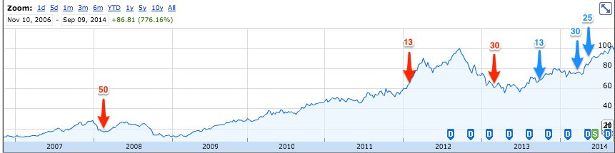
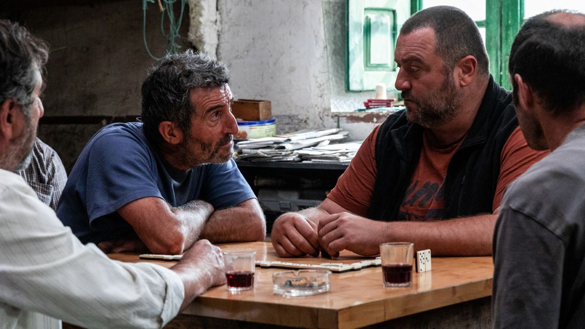
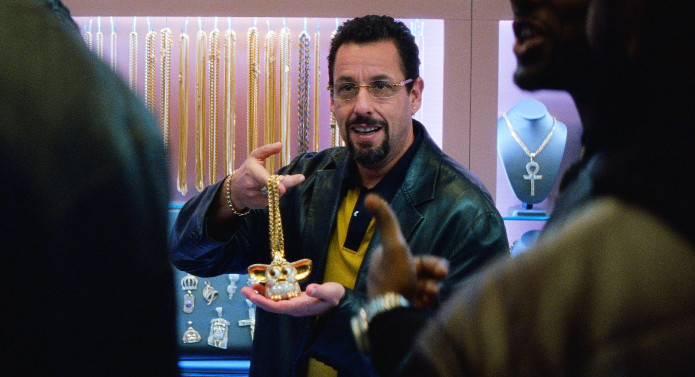

Entrepreneurship
Life inside a tech SME, unfiltered.
61 posts
Innovation & health
Medicine, digital, and what really changes.
120 posts
Internet & tech
The web, seen since 2007.
158 posts
Reading
The books that mattered.
25 posts
Cinema
A yearly top of films, since 2004.
197 postsMost recent
Le top des films de l'année 2022?
Une année 2022 post-COVID (ou pas) avec quelques jolis sorties certes mais peu de gros "ouaw" de mon côté. Les "pas encore vus de 2022" Nope, The innocents, Decision to leave, Arma…
Read the post
Le top des films de (l'étrange année) 2020
Une étrange année cinéma 2020 avec peu de visites dans les salles (snif), beaucoup de streaming, et surtout beaucoup de kidsmovieeducation. Toutefois, voici un top, dans une année …
Read the post
Le top des films 2019 (ou presque)
Les goûts et les couleurs ... voici les miens pour 2019. Pour rappel: Top 2018, Top 2017, Top 2016, Top 2015, Top 2014, Top 2013, Top 2012, Top 2011, Top 2010, Top 2009, Top en 200…
Read the post
Le top des films 2018
Et voilà un petit top pour 2018. Pour rappel: Top 2017, Top 2016, Top 2015, Top 2014, Top 2013, Top 2012, Top 2011, Top 2010, Top 2009, Top en 2008, Top en 2007 , Top en 2004-2005-…
Read the postLe top des films 2018 (à fin août)
Les "pas encore vus" The Florida project, La douleur, Revenge, Hostiles , Phantom Thread, Lady bird, Isle of dogs, The death of Stalin, En Guerre, Sicario: Day of the Soldado, Au p…
Read the postLe top des films 2018 (à fin mars)
Les "pas encore vus" The Florida project, La douleur, Sparring, Burn out, Eva, Revenge, Hostiles, , Phantom Thread, Ladybird, Game Night, Ghostland, Le top 2018 (à fin février) I, …
Read the post